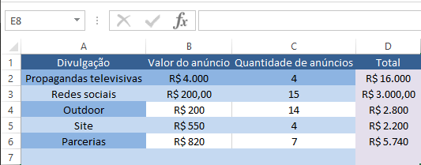

Como utilizar a ferramenta Solver
- O que é o Solver ?
- Como ativar o Solver ?
- Para isso comece clicando em “Arquivo” no menu de navegação do Excel, presente na parte superior do programa.
- Em seguida, procure por “Opções” no menu de navegação lateral que se abrirá, posicionado como última opção na lateral esquerda do programa, conforme exemplificado abaixo.
- Ao abrir uma janela “Opções do Excel” procure pela opção “Suplementos” no menu lateral, em seguida, uma das últimas opções antes dos botões “Ok” e “Cancelar” será um texto “Gerenciar:” seguido de uma caixinha de seleção que por padrão terá escrita “Suplementos de Excel” seguida de um botão “Ir…”.
- Clique no botão “Ir…”, em seguida marque a caixinha que contém a opção “Solver” e clique no botão “Ok”, conforme mostra a imagem abaixo.
- Exemplo prático
- Supondo que tenhamos essa planilha com os tipos de anúncios desejados, seus preços e suas quantidades já estabelecidas:
- Existe uma fórmula padrão do Excel para que possamos calcular a multiplicação entre dois valores, ela se dá inserindo o símbolo do igual (=) seguido da localização do primeiro valor, com dois pontos no meio (:) e o segundo valor. Ex: “=A1*B2”
- Após ter o total de cada um dos anúncios, vamos calcular também o custo total de todos eles com a fórmula “=SOMA(localização do primeiro valor : localização do segundo valor)”:
- Suponhamos que então, surge uma ONG de animais disposta a patrocinar o pet shop com R$10.000,00 em pelo menos um anúncio por mídia.
- Como utilizar o Solver?
- Novamente no menu de navegação superior do Excel, procure pela aba “Dados”, e então pela opção “Solver” que estará na última seção, denominada “Análise” e será a última opção, conforme mostra a imagem a seguir:
O Solver é uma ferramenta excelente para quem deseja testar hipóteses através do Excel, essa ferramenta permite quem a usar, achar um valor através da especificação de uma fórmula em uma célula. Ele pode determinar um valor máximo ou um valor mínimo de uma célula através de outras células, mesmo que seus valores sejam alterados.
Para começar a usar essa ferramenta, deve-se primeiro ativá-la no Excel, já que por padrão ela vem desativada.

Pronto, isso é o suficiente para que a ferramenta Solver esteja ativa no Excel e pronta para ser usada!
Para ajudar a resolver um problema, é importante que estejam definidos os valores específicos para que sejam agrupados e resolvidos. Antes de começar a montar a função para resolução, é essencial ter em mente quais são as incógnitas que serão solucionadas pelo problema, os limites para que as incógnitas não sejam infinitas e um objetivo para que junto com as incógnitas e os limites, seja atingido.
Como exemplo, utilizaremos um pet shop que pretende fazer um anúncio de seus serviços em algumas mídias e deseja calcular o valor total de anúncios de acordo com a quantidade desejada.
Sabendo disso, iremos calcular o total de cada um dos anúncios:
Que após a inserção da fórmula de SOMA, deverá ficar assim:
Podemos, finalmente, utilizar o Solver para fazer esse cálculo. Seguindo o raciocínio explicado anteriormente, as incógnitas seriam quanto a ONG disponibilizaria por anúncio, os limites são a quantidade de anúncios e o total pago e o objetivo é saber quanto pode ser investido em cada mídia contando com esse patrocínio.
Na janela que irá se abrir:
“Definir Objetivo” = será o objetivo que queremos alcançar utilizando o SOLVER, portanto será a célula onde se encontra o valor total necessário para custear os anúncios (D8).
“Para” = serve como um parâmetro para alcançar o objetivo, você pode escolher entre um valor máximo, um valor mínimo ou um valor fixo. Nesse caso usaremos a opção “Valor de:” que será a verba disponível pela ONG (R$10.000).
“Alterando Células Variáveis" = é onde definiremos o intervalo de células variáveis dentro da planilha, esse intervalo pode ser selecionado manualmente, se clicado no botão posicionado no final do campo.
“Sujeito às Restrições” = Local onde é possível adicionar restrições de como tratar os dados. Como estamos tratando número inteiros, precisamos inserir essa restrição, clicando no botão “Adicionar” você abrirá o seguinte menu:

Nesse menu, a “Referência de Célula” será o intervalo selecionado manualmente, o campo ao lado varia de acordo com o tipo de dados que está sendo tratado, nesse caso “número inteiro”.
Clique em “OK” após terminar de inserir as restrições de tratamento de dados. Com essas configurações feitas, a janela “Parâmetros do Solver” deve ficar dessa forma:

Clicando em “Resolver” abrirá outra janela “Resultados do Solver” onde você deverá marcar a opção “Manter Solução do Solver” para que os resultados possam ser vistos na planilha.
Clique em “OK” e perceba que sua planilha já apresentou algumas alterações.
Prontinho, você já pode usar o SOLVER!